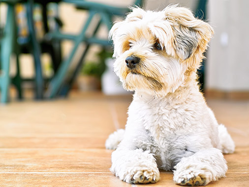
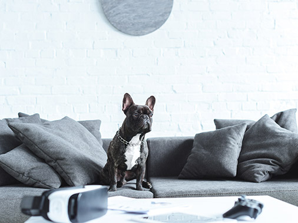
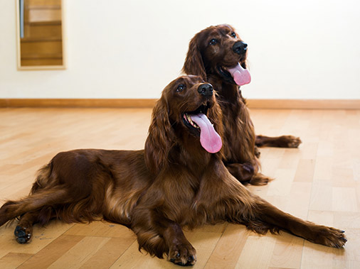
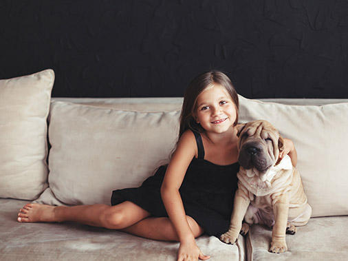
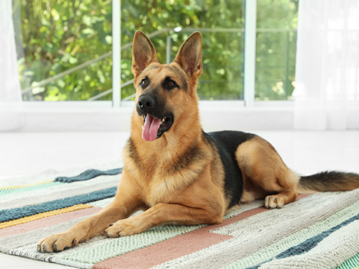

Йоркширський тер'єр
 Йорки ідеально підходять для життя в квартирі. Вони охайні, не линяють і майже не пахнуть. Деякі господарі привчають їх ходити в туалет в лоток. Однак при нестачі руху, спілкування та нових вражень характер вихованця може зіпсуватися.
Французький бульдог
 Йорки ідеально підходять для життя в квартирі. Вони охайні, не линяють і майже не пахнуть.
Деякі господарі привчають їх ходити в туалет в лоток. Однак при нестачі руху, спілкування та нових вражень характер вихованця може зіпсуватися.
Сетер
 Ірландські, англійські і шотландські сетери - це різні породи, що володіють загальними властивостями. Виведені для полювання, в даний час вони все частіше стають собаками-компаньйонами. Сетери охайні, спокійні і при достатньому вигулі цілком підходять для квартирного утримання. Порода абсолютно не агресивна і дуже прив'язана до людей.
Шарпей
 На фото шарпе виглядають добряками і увальнями, але насправді вони хороші захисники і охоронці. Ці собаки помірно активні, не потребують великих просторів і можуть жити в квартирі.
Німецька вівчарка
 Грамотно видресирувана німецька вівчарка цілком може існувати в міській квартирі. Але не варто забувати про те, що це все-таки велика порода. В ідеалі квартира не менше трьох кімнат повинна бути розташована поблизу від парку або іншого просторого місця вигулу, де собака може вільно бігати і тренуватися.
Незабаром у Вас в квартирі з'явиться новий член родини? Якщо так, то пропонуємо перевірити , чи готові Ви до його появи!